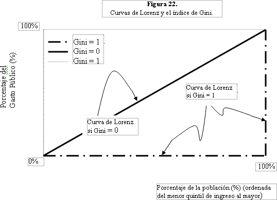

El Gini tendrá un valor de 0 (cero) cuando el área entre las curvas no exista o sea cero, es decir, cuando la curva y la diagonal de igualdad coincidan. El Gini valdrá 1 cuando el área entre la curva de Lorenz y la diagonal de igualdad sea igual al área total bajo la diagonal de igualdad. Un índice de Gini de 1 representa una desigualdad absoluta. En este caso, la Curva de Lorenz se encontrará sobre los bordes sur y este del cuadro (vea la Figura 22). Un Gini de 1 significa que sólo un individuo (el más rico) recibe todos los recursos, mientras que el resto de la sociedad no recibe nada. Por otra parte, un Gini de 0 representa una igualdad perfecta. En este caso, la Curva de Lorenz coincide con la diagonal de igualdad perfecta o es igual a ella.s
Nótese que cuando la distribución del ingreso es progresiva, es decir, cuando la Curva de Lorenz está por encima de la diagonal de igualdad, el índice de Gini también es mayor que cero. Esto se debe a que la distribución de recursos en este caso, aunque progresiva y probablemente equitativa, no es igualitaria, puesto que los individuos más pobres reciben relativamente más recursos que los ricos. Esto sucede con el gasto público en educación primaria en Ecuador (vea la Figura 20). En el límite, un extremo absoluto de progresividad significa que la Curva de Lorenz coincide con los bordes oeste y norte de la Figura 22 (la línea punteada). Nótese que en este caso, el valor del índice de Gini también es 1 (aunque por convención, podríamos desear medirlo como número negativo (–1) para distinguirlo de la situación regresiva).
Basándose en los índices de Gini representados en el Cuadro 14, ¿cree usted que es más igualitaria la distribución del ingreso en Ghana o en Nigeria?